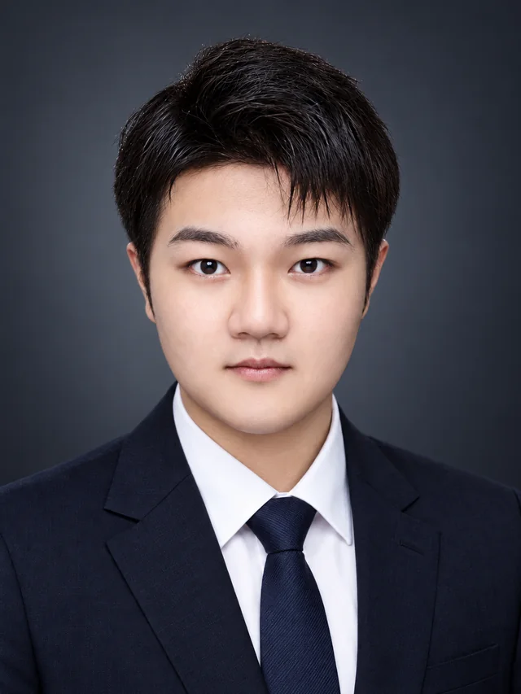
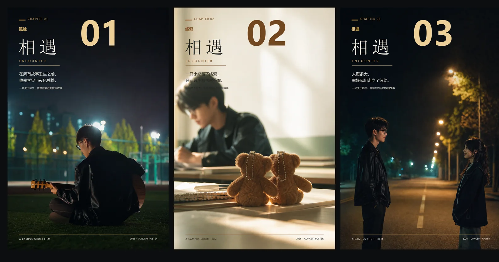
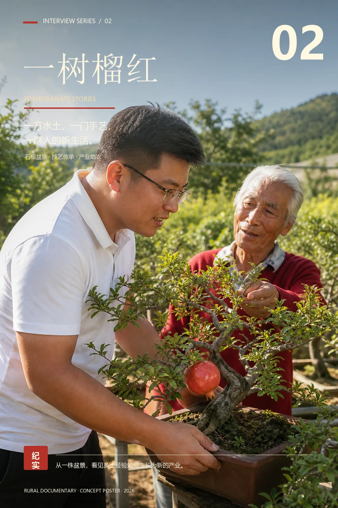
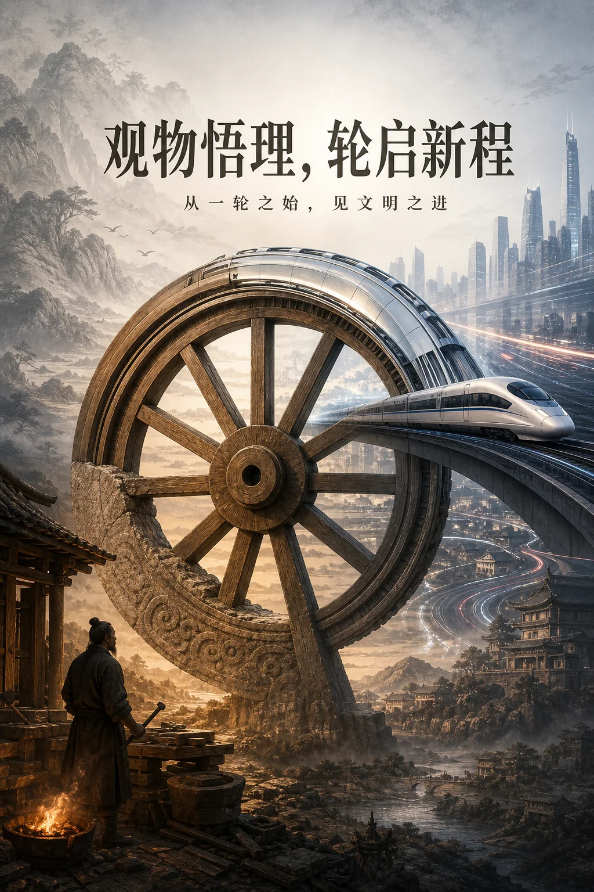
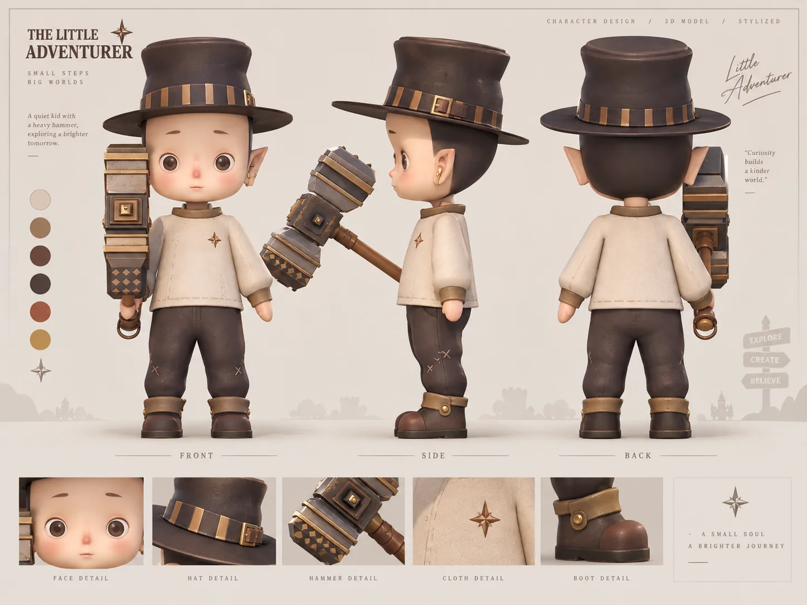
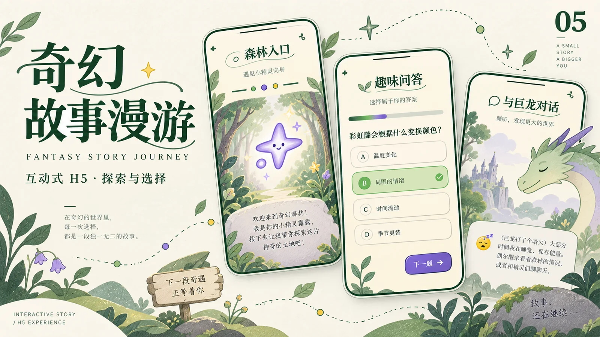
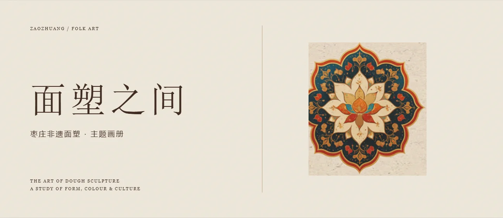
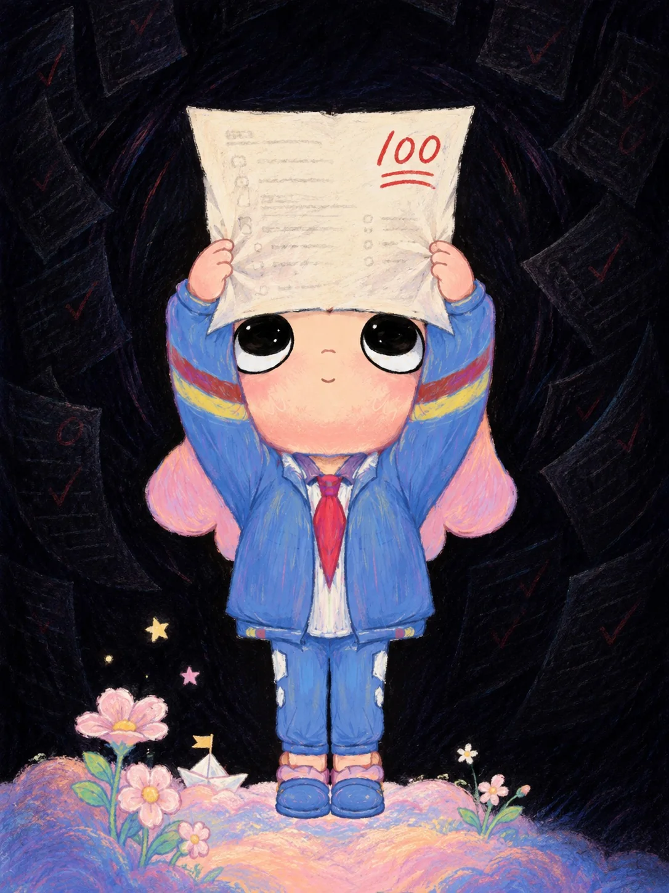
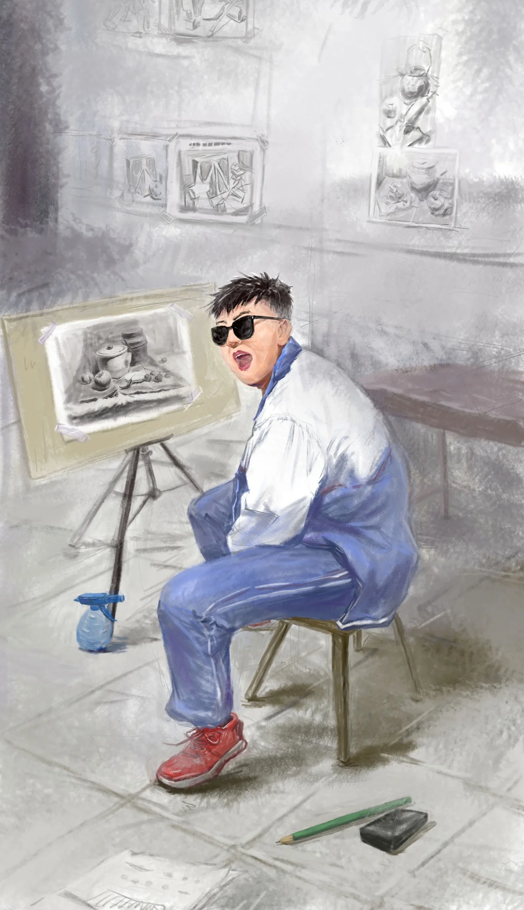
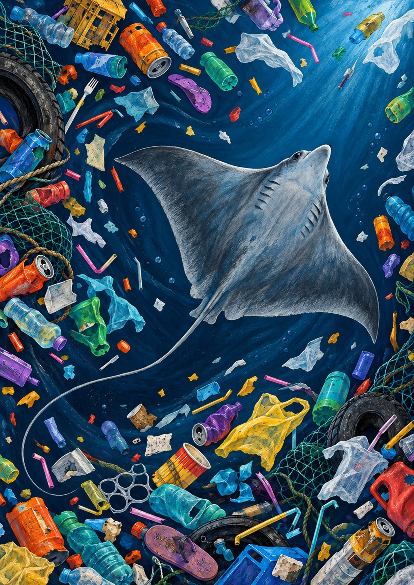

— 至今
AI 训练师 / 实习
山东微卓科技有限公司
多模态视频生成评估与质量反馈
参与公司承接的字节跳动项目。围绕用户提示词与参考图片、视频、音频，对 AI 生成视频进行多维度质量评估，分析生成结果与预期要求之间的差异，为后续团队优化模型提供结构化反馈。
用影像与画笔记录，
也在 AI 实践中继续学习。

枣庄学院 · 23级
数字媒体艺术 · 影视方向
创作偏向影视与动态影像，也喜欢手绘、三维建模和交互设计。从观察与表达出发，尝试用不同媒介记录日常，也逐渐把兴趣延伸到 AI 的实际应用。
目前在山东微卓科技有限公司担任 AI 训练师实习生，参与公司承接的字节跳动项目。希望在创作与实践中继续学习，进一步了解 AI 工具与使用者的需求。
EXPERIENCE / 实践记录
AI 训练师 / 实习
多模态视频生成评估与质量反馈
参与公司承接的字节跳动项目。围绕用户提示词与参考图片、视频、音频，对 AI 生成视频进行多维度质量评估，分析生成结果与预期要求之间的差异，为后续团队优化模型提供结构化反馈。
结合提示词中的属性、运动和视觉要求，检查生成结果是否准确响应用户意图。对照参考素材，判断人物、动作与风格是否一致，定位遗漏、偏离或错误呈现的要求，并说明具体问题。
识别动作不连贯、肢体变形、物体穿模及不符合物理规律等问题；同时从美感与生动性等维度判断视频的整体视觉表现，兼顾内容符合度与观看体验。
对发现的问题进行分类标注与严重程度评分，写明判断依据，指出未被遵循的具体要求，并提出针对性改进建议。以清晰的问题描述，支持后续团队开展模型优化。
参与评估标准讨论及结果复核，围绕问题归类、严重程度和判断依据进行沟通，帮助统一评估尺度，提高反馈的一致性。
工作侧重评估、标注与反馈，不涉及直接训练、调参或重新生成验证。
数字媒体创作 + AI 实践
查看完整简历 ↗用镜头记录人与现实，以动态影像探索新的表达。

01WATCH FILM ↗原创治愈微电影 / 编剧·拍摄·剪辑
以温柔纪实的镜头语言，讲述人与人相遇时那些不易被察觉的细腻情愫。从剧本到最终剪辑，独立完成完整创作流程。
在 YouTube 观看完整影片 ↗
02READ STORY ↓乡村纪实人物采访 / 编剧·拍摄·剪辑
以峄城返乡创业者刘威为拍摄对象，通过人物专访与田间实景，记录他依托石榴盆景产业助农共富的经历，还原新时代青年返乡助农的真实面貌。

03WATCH FILM ↗AIGC 影像 / 配套海报展示
从一轮之始，见文明之进。以“轮”为视觉线索，将传统水车、山水聚落与现代轨道交通置于同一画面，尝试讨论技术演进中始终延续的创造力与前行感。
在 YouTube 观看完整影片 ↗ 查看分镜文档 · 飞书 ↗从镜头记录现实，
到用三维重塑想象。
三维造型 · 视觉表达 · H5 交互，让想象拥有形状，也回应每一次探索。
返回影像叙事 ↑
04CHARACTER SHEET ↓Maya 角色建模 / 角色设定板
一个背着工具、向未知出发的小小冒险家。以角色三视图为主体，配合面部、帽饰、锤具、服装与靴子的局部细节，呈现从整体轮廓到材质语言的一致性。

EXPLORE THE STORY ↓互动式 H5 / 故事探索与界面交互
跟随小精灵进入奇幻森林，在阅读、选择与反馈之间推进旅程。作品将场景探索、趣味问答、历史时间线与巨龙对话串联成移动端故事体验，以奶油色底、森林绿线条和紫色点缀构建轻盈的童话氛围，让观看者成为主动探索故事的参与者。
海报为基于作品录屏重新设计的宣传视觉，实际界面与交互以演示视频为准。

VIEW EDITORIAL ↗非遗主题画册 / 版式设计与视觉编排
以枣庄非遗面塑为主题，从乡土传承、人物造型与民间色彩三个角度组织图文。米色纸张质感与棕色构成统一的视觉线索，通过标题层级、图片组合和留白，建立从封面到内页的阅读节奏。
展示为在原作基础上整理的版式预览，包含封面、目录与三组示范内页。
查看完整画册排版 ↗把目光停留在
人的感受，与生命的处境。
评价、日常与环境，三种关于“看见”的练习。
返回三维与视觉设计 ↑
泡泡玛特创意大赛作品
我为满分高兴，也担心只有满分的自己才值得被肯定。
作品以泡泡玛特角色 NYOTA 为创作主体，描绘她微笑着举起满分试卷的情景，呈现获得好成绩时的喜悦，以及被分数评价的压力。醒目的“100”既是努力得到肯定的象征，也承载着继续保持优秀的期待。紧握纸张的双手与略显拘谨的姿态，让快乐之中流露出不安。
我将 NYOTA 置于校园成绩评价的情境中，以她举起试卷的动作承载孩子渴望被肯定的心情。画面以明亮柔和的 NYOTA、花朵和纸船，与暗色背景中隐约浮现的试卷、批改痕迹形成对比。脚下的花园象征童心与成长的可能，周围收拢的暗色线条则暗示外界评价带来的束缚。我希望通过这种并存的情绪，引发对单一分数评价的思考：在关注成绩的同时，也看见孩子的感受、努力与独特价值。

人物绘画 / 同学肖像
这幅人物绘画以画室为背景，描绘了同学坐在画架前回头的一瞬间。墨镜、张嘴的表情与随性的坐姿，为安静的绘画场景增添了俏皮与活力，也呈现出学习日常中轻松、鲜活的一面。
画面以灰色调概括周围环境，通过蓝白校服、红色球鞋与面部暖色突出人物。墙上的习作、画架上的静物素描，以及散落的铅笔和橡皮，共同构成与绘画相伴的日常空间。我希望通过这幅作品，在记录同学外貌的同时，留下学习绘画时的生活状态与青春个性。

海洋保护主题大赛作品
作品以海洋中的鳐鱼为主体，将鲜艳的塑料包装、废弃瓶罐与渔网，与灰蓝色的海洋生物并置，形成强烈的色彩反差。原本没有生命的垃圾格外夺目，而真正鲜活的生命却显得黯淡、脆弱，以此呈现海洋污染下生命与废弃物之间的失衡。
画面中的垃圾沿旋涡状水流聚集，形成包围之势，象征海洋动物的生存空间不断受到挤压。我希望观众在被鲜艳色彩吸引后，进一步注意到被垃圾围困的生命，思考日常丢弃行为与海洋环境的联系，关注并保护海洋动物及其栖息地。
留意身边的细节
记录真实的人
让工具服务表达
在尝试中慢慢积累
影像、AIGC，或者一个尚未成形的想法